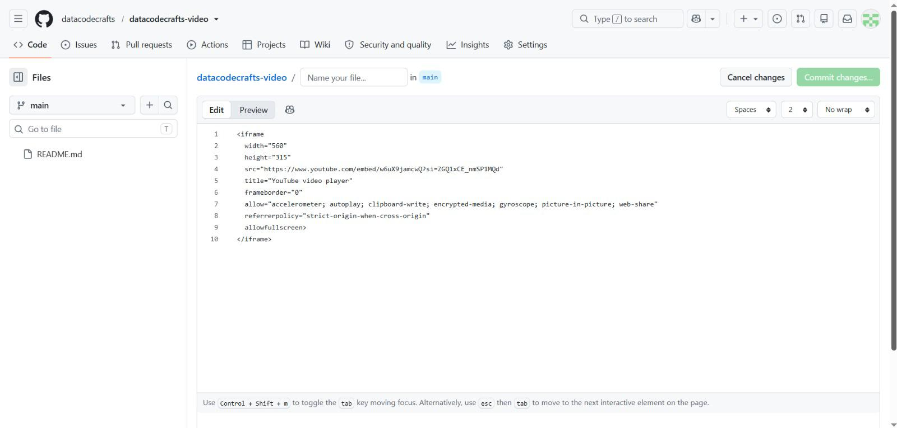

Paste the code into your HTML
Open your HTML file (locally in your code editor or directly in the GitHub file editor) and paste the copied <iframe> code directly where you would like the video to be shown. Save (or commit) the file and refresh the page in your browser to check that the video displays.
github.com — datacodecrafts-video

embed code
<iframe width="560" height="315"
src="https://www.youtube.com/embed/w6uX9jamcwQ"
title="YouTube video player" frameborder="0"
allow="accelerometer; autoplay; clipboard-write;
encrypted-media; gyroscope; picture-in-picture"
allowfullscreen>
</iframe>